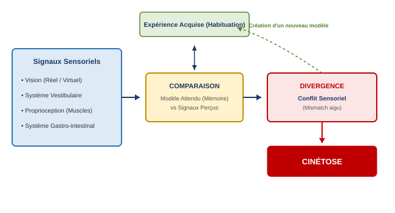
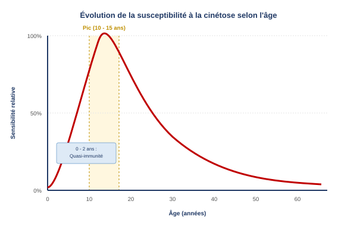

1. Introduction et Épidémiologie
La cinétose, ou mal des transports [cite: 572, 611], regroupe un ensemble de symptômes physiologiques [cite: 587] déclenchés lorsqu'un individu est exposé à un mouvement réel ou apparent d'un type inhabituel[cite: 588]. Tous les modes de transport (terrestre, maritime, aérien ou spatial) sont susceptibles d'induire cette affection[cite: 587].
L'analyse statistique et épidémiologique met en évidence des variations majeures selon l'environnement et le niveau d'activité de l'individu :
- Hiérarchie des milieux : L'incidence est maximale en mer, suivie du milieu aérien, et enfin du transport terrestre (Mer > Air > Terre)[cite: 591].
- Rôle à bord : Les passagers sont les plus touchés, suivis des pilotes superviseurs ou officiers systèmes d'armes (WSO), tandis que le pilote aux commandes (pilote en fonction) est le mieux préservé (Passager > Pilote superviseur/WSO > Pilote en fonction)[cite: 592, 639].
- Statistiques en aviation civile : La prévalence est de 1 % chez les passagers de l'aviation commerciale, mais elle grimpe à 8 % chez les pilotes privés[cite: 593].
- Statistiques en aviation militaire : Dans l'aviation de chasse, le phénomène est massif, impactant 40 % des élèves pilotes et 50 % des navigateurs/WSO[cite: 593].
2. Étiologie et Mécanisme Physiologique
Le fondement étiologique de la cinétose repose sur la théorie du conflit sensoriel (ou mismatch)[cite: 589, 598]. Il s'agit d'une discordance aiguë entre les informations physiques collectées en temps réel par les capteurs de l'organisme et les modèles d'attente mémorisés par le système nerveux central[cite: 599].
Quatre systèmes biologiques majeurs concourent à l'apparition du conflit[cite: 603]:
- Le système vestibulaire (canaux semi-circulaires et otolithes)[cite: 604].
- Le système visuel (perceptions optiques focales et périphériques)[cite: 605].
- Les sens proprioceptifs (récepteurs musculaires, tendineux et cutanés dits "sens de la position")[cite: 606, 607].
- Le système gastro-intestinal, particulièrement sensible aux contraintes mécaniques[cite: 608].

Lorsque le cerveau traite l'expérience présente [cite: 609, 610] et constate une divergence [cite: 612] avec l'expérience acquise [cite: 613], la cinétose s'installe[cite: 611]. Heureusement, l'intégration de cette nouvelle expérience mécanique [cite: 614, 615] permet une habituation et une adaptation plus ou moins rapide et complète selon les individus[cite: 600].
3. Sémiologie et Symptômes
Le tableau clinique de la cinétose est large et évolutif, impactant lourdement les capacités cognitives et motrices du membre d'équipage :
- Symptômes neuro-végétatifs initiaux : Sensation de malaise général (faintness) [cite: 616, 617], somnolence (drowsiness) [cite: 617], accès de vertige [cite: 618], sueurs froides [cite: 618] et bâillements répétés[cite: 624].
- Modifications cliniques visibles : Pâleur cutanée prononcée [cite: 625], hypersalivation [cite: 621], céphalées (maux de tête) [cite: 626], polypnée (augmentation de la fréquence respiratoire) [cite: 622] et hyperventilation[cite: 623].
- Dégradation opérationnelle : Maladresse motrice (clumsiness) [cite: 619], réduction globale des performances de pilotage [cite: 620], suivies d'une phase de découragement profond et d'apathie[cite: 629].
- Phase critique : Nausées puissantes [cite: 627] culminant par des vomissements[cite: 628].
4. Facteurs Favorisants
La tolérance aux accélérations et la résistance à la cinétose dépendent de variables individuelles et environnementales bien définies :
- Facteurs individuels : Prédisposition génétique intrinsèque, résurgence de mauvais souvenirs ou d'expériences antérieures traumatisantes [cite: 636], anxiété, manque de motivation [cite: 640] ou un entraînement au vol insuffisant ou interrompu (perte d'habituation)[cite: 637].
- Contraintes aéronautiques : Sollicitations dynamiques intenses combinant le roulis, le tangage, les accélérations et les turbulences météorologiques[cite: 638]. La voltige aérienne (voltige +++) présente le potentiel de déclenchement le plus élevé[cite: 638].
- Environnement cabine : Température ambiante élevée (chaleur), confinement, odeurs de carburant ou de vomi, ainsi que l'état physiologique du pilote (fatigue, estomac trop vide ou au contraire en phase de surcharge digestive)[cite: 640].

L'âge est un facteur clé[cite: 641]. La sensibilité est quasi nulle à la naissance, croît rapidement durant l'enfance pour atteindre son maximum absolu entre 10 et 15 ans, puis décroît de manière continue tout au long de la vie adulte[cite: 642].
5. Stratégies de Prévention
La prévention non pharmacologique repose sur des mesures d'hygiène de vie et des techniques comportementales simples visant à atténuer les conflits sensoriels :
- Hygiène pré-vol : Assurer un sommeil suffisant (éviter la fatigue) [cite: 644] et consommer des repas légers avant d'embarquer (éviter l'estomac vide ou trop lourd)[cite: 645].
- Gestion du vol : Éviter autant que possible les zones de turbulences[cite: 646]. En cas d'apparition des premiers symptômes, il faut stopper immédiatement les sollicitations et les manœuvres brusques[cite: 647].
- Ergonomie cabine : Régler la climatisation et la ventilation pour assurer un flux d'air frais, éviter le confinement [cite: 648] et installer le sujet sensible à proximité immédiate du centre de gravité de l'aéronef, là où les accélérations linéaires et angulaires sont minimales[cite: 648].
- Techniques de maintien corporel : Maintenir la tête parfaitement immobile (éviter de remuer ou balancer la tête) [cite: 649], fixer un point fixe sur l'horizon visuel extérieur et rester activement concentré sur la conduite du vol[cite: 650]. En cabine passager, adopter si possible une position allongée [cite: 651] associée à des techniques de relaxation [cite: 652] ou suivre un entraînement d'habituation régulier[cite: 653].
6. Thérapeutique et Médications
L'arsenal pharmacologique contre le mal des transports comprend plusieurs molécules éprouvées : les patchs transdermiques de scopolamine (Scopoderm TTS) [cite: 655], les antihistaminiques classiques (Marzine, Transmer, Nautamine) [cite: 656, 660], les inhibiteurs calciques (Cinnarizine, Flunarizine) [cite: 657] ou l'homéopathie (Cocculine)[cite: 658, 664].
- La Nautamine ® provoque une somnolence sévère et une baisse de la vigilance[cite: 660].
- Le Scopoderm TTS ® engendre des troubles de l'accommodation visuelle (mydriase, vision floue de près)[cite: 661].
7. Cas Particulier : Le Mal du Simulateur
Le mal du simulateur (simulator sickness) constitue un cas d'étude unique de cinétose[cite: 667]. Il survient aussi bien dans les simulateurs de vol fixes que sur les cabines mobiles[cite: 668].
Son mécanisme est inverse à la cinétose classique : l'œil perçoit un mouvement visuel dynamique à grande amplitude sur l'écran, tandis que le système vestibulaire de l'oreille interne (dans un simulateur fixe) ne ressent aucune accélération physique correspondante. Ce conflit flagrant force le cerveau à tenter de construire un nouveau modèle d'attente sensoriel et nécessite une phase de réinitialisation (reset) lors du retour aux conditions terrestres ou aéronautiques réelles[cite: 669].